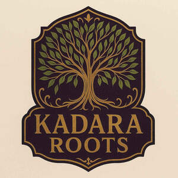

Trade Mark Journal No.2025/034 22 August 2025
UK00004248992 13 August 2025 (3,4,5,21,29,30,31,35)

- Class 3
- Cosmetic oil; Hair oils; Hair fixing oil; Beard oil; Oil baths for hair care; Oils for hair conditioning; Combing oil; Hair cosmetics; Hair moisturisers; Hair serums; Hair nourishers; Cleansing oil; Oils for the skin; Lavender oil for cosmetic use; Shaving oils; Jasmine oil; Rosemary oil for cosmetic use; Rose oil; Peppermint oil [perfumery]; Facial oils; Eucalyptus oil for cosmetic use; Face oils; Body oils; Body and facial oils; Body moisturisers; Body scrubs; Body milks; Beauty care cosmetics; Beauty serums; Perfumery products; Beauty serums with anti-ageing properties; Skincare cosmetics; Natural cosmetics; Beauty preparations for the hair; Distilled oils for beauty care; Beauty care preparations; Beauty tonics for application to the body; Beauty tonics for application to the face; Essential oils; Castor oil for cosmetic purposes; Mineral oils [cosmetic]; Natural oils for perfumes; Aromatic oils for the bath; Body care cosmetics; Body massage oils; Natural oils for cosmetic purposes; Cosmetics in the form of oils; Massage oils; Cuticle oils; Facial massage oils; Non-medicated body soaks; Perfumed oils for skin care; Ethereal essences and oils; Skin care oils [non-medicated]; Musk [natural]; Natural musk; Non-medicated oils; Anti-ageing moisturiser; Anti-aging skincare preparations; Coconut oil for cosmetic purposes; Almond oil for cosmetic purposes; Amla oil for cosmetic purposes; Rose oil for cosmetic purposes; Citronella oil for cosmetic use; Suntanning oil [cosmetics]; Cosmetic sun oils; Body oils [for cosmetic use]; Suntan oils for cosmetic purposes; Cosmetic oils for the epidermis; Facial oil; Skin care oils [cosmetic]; Perfume oils for the manufacture of cosmetic preparations; Petroleum jelly for cosmetic purposes; Jelly (Petroleum -) for cosmetic purposes; Bath oils for cosmetic purposes; Shaving oil; Suntan oils [cosmetics]; Tanning oils [cosmetics]; Cosmetic soap; Cosmetic facial lotions; Facial lotions [cosmetic]; Cosmetics and cosmetic preparations; Cosmetic moisturisers; Cosmetic suntan lotions; After-sun oils [cosmetics]; Cosmetic hair lotions; Sunscreen [for cosmetic use]; Hair oil; Cosmetic skin fresheners; Creams (Cosmetic -); Cosmetic creams; Skin balms [cosmetic]; Cosmetic suntan preparations; Skin cream [for cosmetic use]; Cuticle oil; Skin cleansers [cosmetic]; Cosmetic soaps; Cosmetic massage creams; Massage oil; Cosmetic powder; Sunscreens [for cosmetic use]; After-sun lotions [for cosmetic use]; Cosmetic creams for the skin; Skin creams [cosmetic]; Skin creams [for cosmetic use]; Cosmetic tanning preparations; Moisturising skin lotions [cosmetic]; Facial moisturisers [cosmetic]; Cosmetic masks; Skin care lotions [cosmetic]; Cleansing creams [cosmetic]; Facial creams [cosmetic]; Facial creams [for cosmetic use]; Suncare lotions [for cosmetic use]; Facial cleansers [cosmetic]; Anti-aging creams [for cosmetic use]; Hair care lotions [for cosmetic use]; Cosmetic creams and lotions; Ethereal oils for cosmetic purposes; Cosmetic sunscreen preparations; Facial cream [for cosmetic use]; Cosmetic sun milk lotions; Lip coatings [cosmetic]; Perfumed powder [for cosmetic use]; Mineral water sprays for cosmetic purposes; Bath oil; Tissues impregnated with essential oils, for cosmetic use; Sunscreen creams [for cosmetic use]; Acne cleansers, cosmetic; Anti-ageing creams [for cosmetic use]; Skin whitening preparations [cosmetic]; Cosmetic products for the shower; Softening cleanser [cosmetic]; Lotions for cosmetic purposes; Body emulsions for cosmetic use; Body oil; Lavender water; Lavender gel; Scented oils; Bath herbs.
- Class 4
- Mineral oils; Mineral oil for use in the manufacture of cosmetics and skin care products.
- Class 5
- Medicinal oils; Medicinal herb extracts; Coconut oil for medical purposes; Castor oil for medical purposes; Antioxidants; Almond oil for pharmaceutical purposes; Castor oil as a coating for pharmaceuticals; Castor oil [for medical purposes]; Oil of turpentine for pharmaceutical purposes; Almond oil for medical purposes; Camphor oil for medical purposes; Medicinal herb infusions.
- Class 21
- Cosmetic brushes.
- Class 29
- Grapeseed oil; Coconut oil; Olive oil; Extra virgin olive oil; Edible oil; Canola oil; Spiced oils.
- Class 30
- Herbal honey; Herbal infusions; Natural honey.
- Class 31
- Natural plants; Natural seeds.
- Class 35
- Marketing research in the fields of cosmetics, perfumery and beauty products; Business promotion services provided by audio/visual means; Online marketing; Online advertising; Online advertisements; Advertising the goods and services of online vendors via a searchable online guide; Online ordering services; Online advertising services; On-line advertising; Online business networking services; Computerized on-line ordering services; Online retail services relating to cosmetics; Promotion, advertising and marketing of on-line websites; Business management of wholesale and retail outlets; Administration of the business affairs of retail stores; Online retail store services relating to cosmetic and beauty products; Mail order retail services for cosmetics; Retail services in relation to toiletries; Retail services in relation to hair products; Retail services in relation to pharmaceutical preparations; Business management of wholesale outlets; Advertising services for the promotion of e-commerce; Advertising of business web sites; On-line advertising and marketing services; Business administration services for processing sales made on the internet; Business administration services for the processing of sales made on the Internet; Internet marketing; Business management of retail outlets; Organisation of exhibitions for business or commerce; Acquisitions (Business -) consulting services; Chamber of commerce services for the promotion of commerce; Providing a searchable online advertising guide featuring the goods and services of online vendors; Advertising and marketing services.
Lendell MORRISON